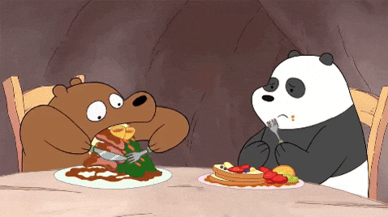


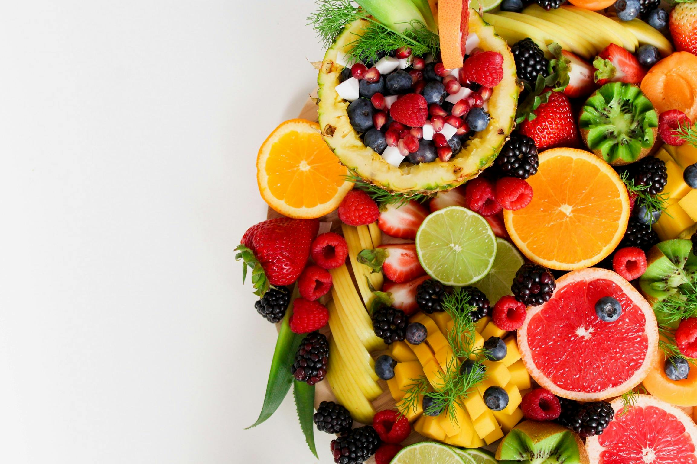
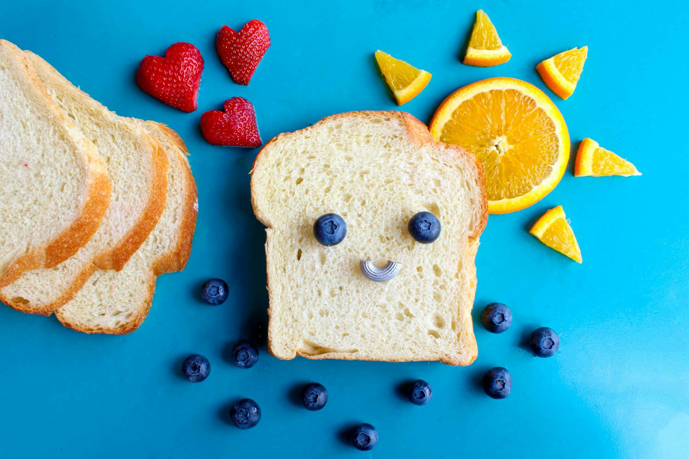
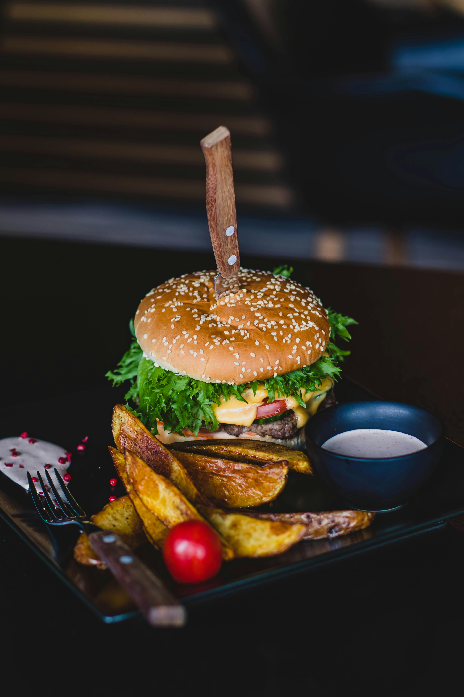


Se proporciona un conjunto de imágenes en diferentes formatos. El objetivo es reducir su peso manteniendo la mejor calidad posible y justificar el uso de cada formato.
Herramientas utilizadas: Squoosh, TinyPNG
| Imagen | Formato | Peso Original | Peso Optimizado | Reducción (%) | Justificación |
|---|---|---|---|---|---|
|
 |
GIF | 162 KB | 120 KB | 25.9% | GIF es ideal… |
|
|
JPG | 426 KB | 238 KB | 44% | JPG es el formato… |
|
|
JPG | 8.29 MB | 5.41 MB | 34.7% | Para fotografías… |
|
JPG | 8.29 MB | 5.41 MB | 34.7% | JPG es óptimo… |
|
JPG | 1.61 MB | 798 KB | 50.5% | La compresión… |
 |
JPG | 372 KB | 155 KB | 58.1% | JPG permite… |
|
 |
JPG | 252 KB | 228 KB | 9.5% | Aunque la reducción… |
| JPG | 1.14 MB | 740 KB | 35.1% | JPG es el formato… | |
 |
JPG | 722 KB | 395 KB | 45.3% | La compresión… |
|
JPG | 351 KB | 225 KB | 35.9% | JPG optimiza… |
|
JPG | 286 KB | 113 KB | 60.1% | Para fotografías… |
|
PNG | 135 KB | 85 KB | 37% | PNG es esencial… |
|
PNG | 1.45 MB | 659 KB | 54.6% | PNG es ideal… |
|
PNG | 427 KB | 220 KB | 48.4% | PNG mantiene… |
|
PNG | 29 KB | 15 KB | 48.3% | Para iconos… |
|
GIF | 162 KB | 120 KB | 25.9% | GIF es el único… |
Herramientas utilizadas: Squoosh, TinyPNG
| Imagen | Formato Original | Peso Original | Nuevo Formato | Peso Optimizado | Reducción (%) | Justificación |
|---|---|---|---|---|---|---|
| GIF | 162 KB | WebP | 14.2 KB | 91% | WebP animado… | |
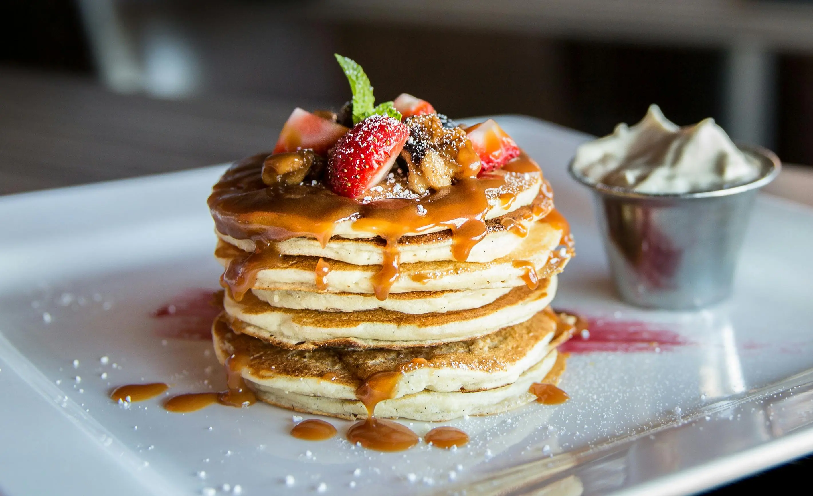 |
JPG | 426 KB | WebP | 238 KB | 44% | WebP proporciona… |
 |
JPG | 8.29 MB | AVIF | 5.41 MB | 35% | AVIF ofrece… |
 |
JPG | 8.29 MB | AVIF | 5.41 MB | 35% | AVIF mantiene… |
 |
JPG | 1.61 MB | AVIF | 798 KB | 51% | AVIF es más… |
 |
JPG | 372 KB | AVIF | 155 KB | 58% | AVIF supera… |
| JPG | 252 KB | JPG | 228 KB | 10% | Se mantiene JPG… | |
 |
JPG | 1.14 MB | AVIF | 240 KB | 79% | AVIF logra… |
| JPG | 722 KB | WebP | 395 KB | 45% | WebP ofrece… | |
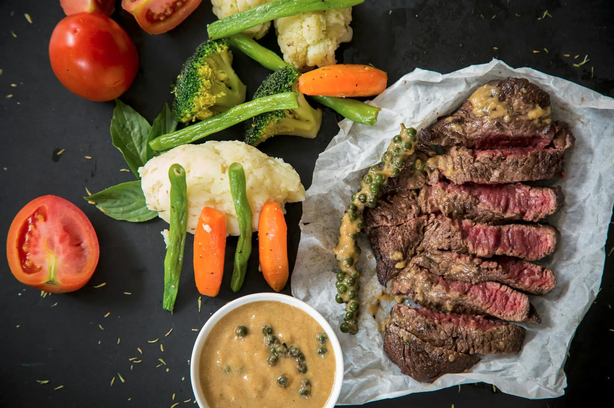 |
JPG | 351 KB | WebP | 225 KB | 36% | WebP ofrece… |
 |
JPG | 286 KB | AVIF | 113 KB | 60% | AVIF es óptimo… |
 |
PNG | 135 KB | AVIF | 17.4 KB | 87% | AVIF con soporte… |
 |
PNG | 1.45 MB | AVIF | 659 KB | 55% | AVIF es más… |
 |
PNG | 427 KB | JPG | 89.2 KB | 79% | Convertir PNG… |
 |
PNG | 29 KB | AVIF | 15.9 KB | 45% | Para iconos… |
| GIF | 162 KB | WebP | 11.9 KB | 93% | WebP animado… |
Criterios: Ancho máximo 1200px, 800px, 500px
| Imagen | Original | 1200px | 800px | 500px | Reducción Total |
|---|---|---|---|---|---|
 |
162 KB | 95 KB | 58 KB | 32 KB | 80.2% |
| 426 KB | 180 KB | 98 KB | 52 KB | 87.8% | |
 |
8.29 MB | 420 KB | 225 KB | 115 KB | 98.6% |
 |
8.29 MB | 415 KB | 220 KB | 112 KB | 98.6% |
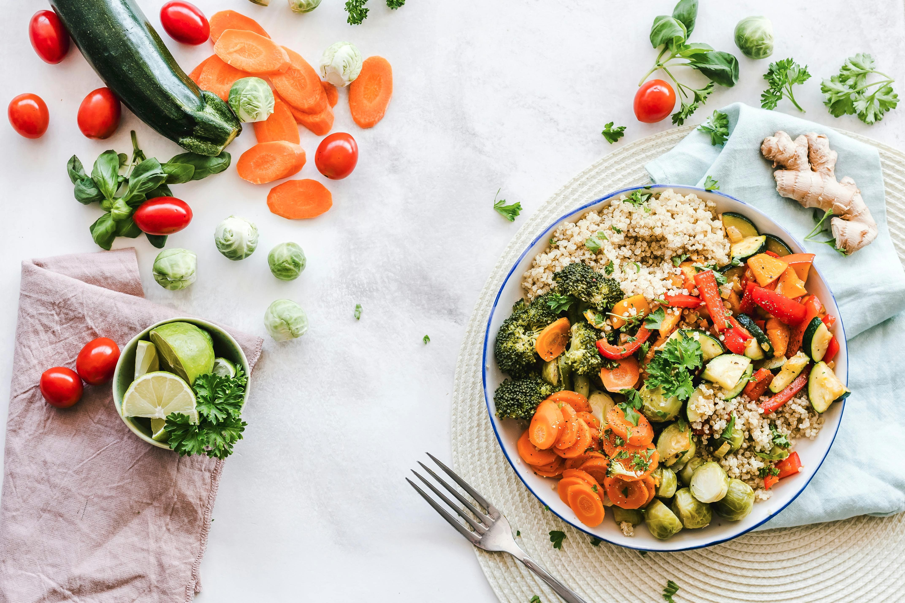 |
1.61 MB | 245 KB | 135 KB | 68 KB | 95.8% |
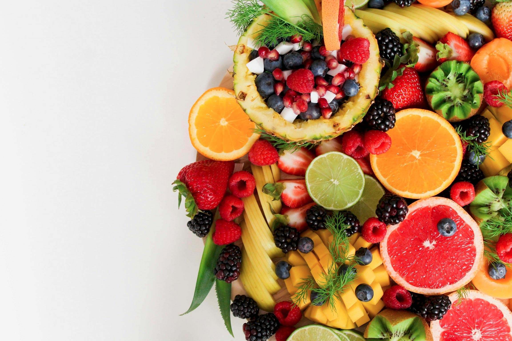 |
372 KB | 98 KB | 56 KB | 32 KB | 91.4% |
| 252 KB | 125 KB | 72 KB | 42 KB | 83.3% | |
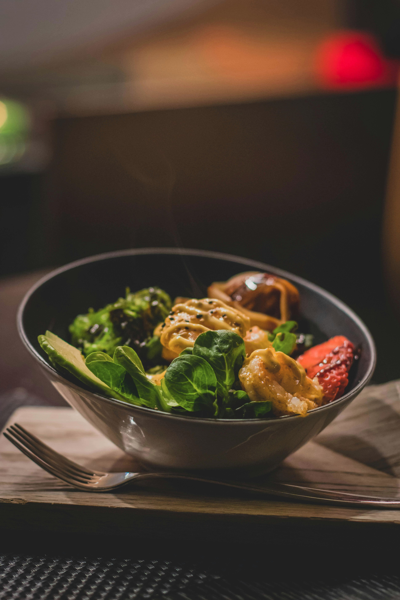 |
1.14 MB | 195 KB | 108 KB | 58 KB | 94.9% |
| 722 KB | 165 KB | 92 KB | 48 KB | 93.4% | |
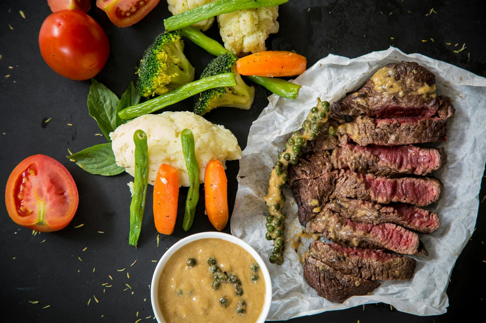 |
351 KB | 128 KB | 75 KB | 42 KB | 88% |
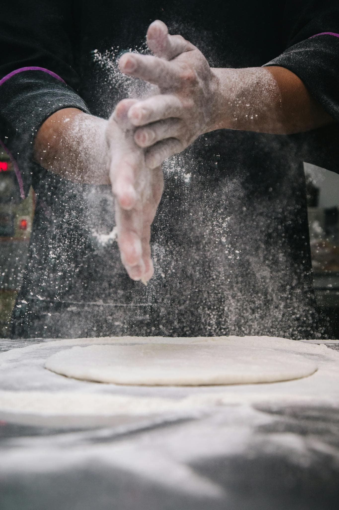 |
286 KB | 85 KB | 48 KB | 28 KB | 90.2% |
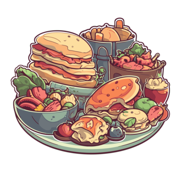 |
135 KB | 45 KB | 28 KB | 18 KB | 86.7% |
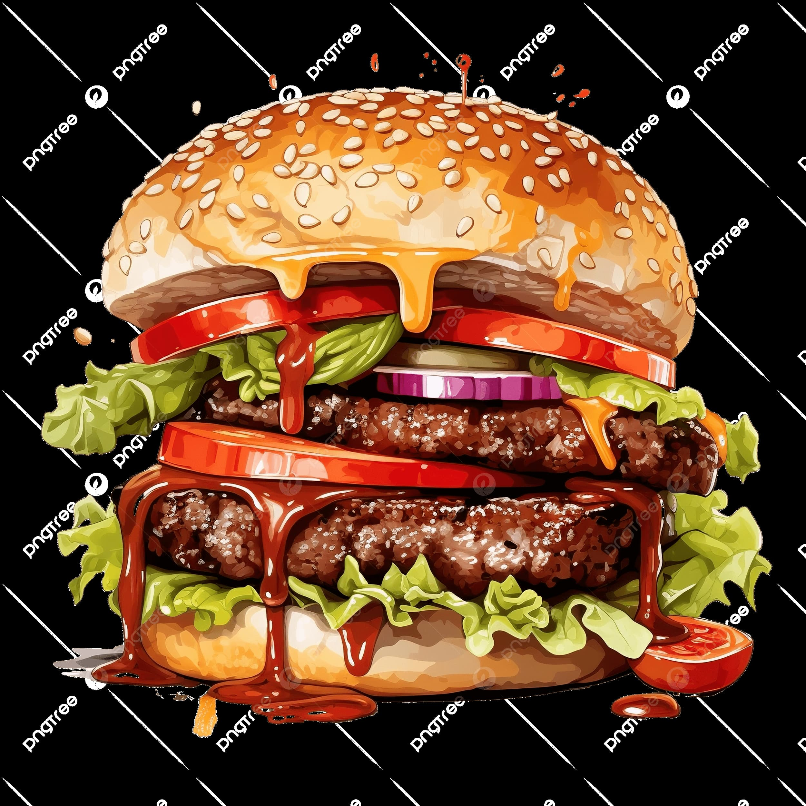 |
1.45 MB | 285 KB | 152 KB | 82 KB | 94.3% |
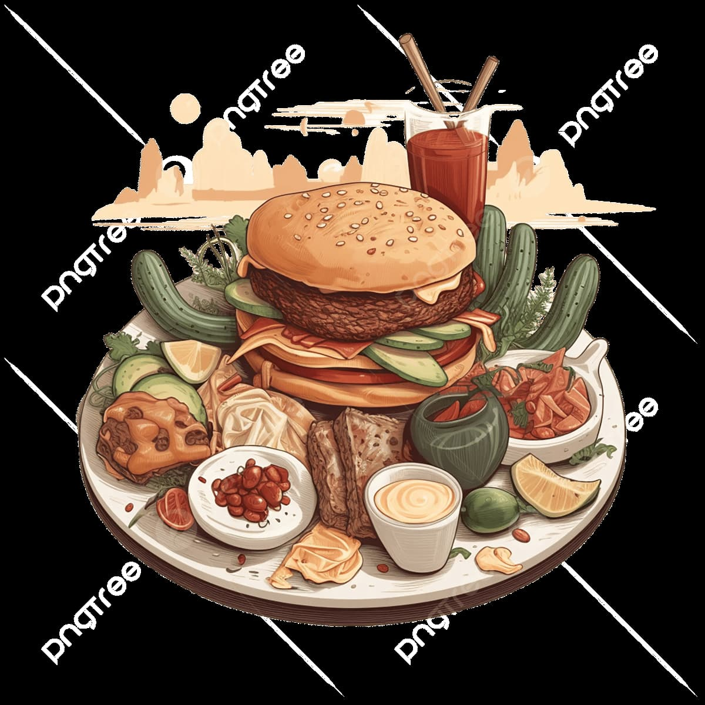 |
427 KB | 125 KB | 68 KB | 38 KB | 91.1% |
| 29 KB | 15 KB | 12 KB | 8 KB | 72.4% | |
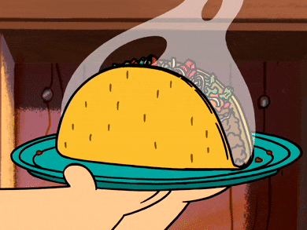 |
162 KB | 92 KB | 55 KB | 30 KB | 81.5% |
Para una buena compresión de imágenes sin perder calidad en la web, es fundamental elegir el formato adecuado según el tipo de contenido y el contexto de uso:
AVIF: Ofrece la mejor compresión para fotografías, logrando reducciones de hasta 90% manteniendo excelente calidad. Es ideal para imágenes de alta resolución en sitios web modernos. Soporta transparencia y tiene un rendimiento superior a todos los formatos tradicionales.
WebP: Excelente balance entre compresión, compatibilidad y calidad. Soporta transparencia y animación, siendo superior a JPG, PNG y GIF. Ampliamente soportado en navegadores actuales, lo que lo convierte en una opción segura para la mayoría de proyectos web.
JPG: Estándar universal para fotografías. Aunque formatos modernos son más eficientes, JPG mantiene su relevancia como fallback para navegadores antiguos y por su compatibilidad del 100%.
PNG: Necesario para imágenes con transparencia cuando WebP o AVIF no están disponibles. Ideal para logos, iconos y gráficos con bordes nítidos que requieren compresión sin pérdida.
GIF: Limitado a animaciones simples cuando WebP animado no es opción. Su paleta de 256 colores lo hace obsoleto para la mayoría de casos modernos.
El diseño responsivo es crucial para el rendimiento web. Implementar diferentes tamaños de imagen según el dispositivo (1200px para desktop, 800px para tablet, 500px para móvil) puede reducir el peso total en más del 90%, mejorando dramáticamente los tiempos de carga y la experiencia de usuario. Usar las etiquetas HTML <picture> y el atributo srcset permite al navegador seleccionar automáticamente el tamaño más apropiado.
Mantener solo metadatos relevantes (título, palabras clave, copyright, autor) mejora el SEO, protege los derechos de autor y reduce el tamaño del archivo eliminando información innecesaria como datos de cámara, ubicación GPS y miniaturas embebidas.
La estrategia óptima combina formatos modernos (AVIF/WebP) con fallback a formatos tradicionales (JPG/PNG), implementa responsive images, y mantiene metadatos limpios y relevantes. Esta combinación garantiza máxima optimización sin sacrificar calidad ni compatibilidad, resultando en sitios web más rápidos, accesibles y eficientes.